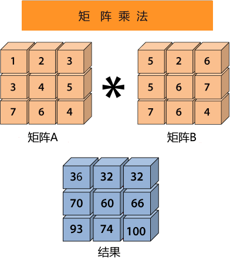

NumPy矩阵乘法
矩阵乘法是将两个矩阵作为输入值，并将 A 矩阵的行与 B 矩阵的列对应位置相乘再相加，从而生成一个新矩阵，如下图所示：
矩阵乘法运算被称为向量化操作，向量化的主要目的是减少使用的 for 循环次数或者根本不使用。这样做的目的是为了加速程序的计算。
下面介绍 NumPy 提供的三种矩阵乘法，从而进一步加深对矩阵乘法的理解。
示例如下：
注意：必须确保第一个矩阵中的行数等于第二个矩阵中的列数，否则不能进行矩阵乘法运算。

图1：矩阵乘法
图1：矩阵乘法
矩阵乘法运算被称为向量化操作，向量化的主要目的是减少使用的 for 循环次数或者根本不使用。这样做的目的是为了加速程序的计算。
下面介绍 NumPy 提供的三种矩阵乘法，从而进一步加深对矩阵乘法的理解。
逐元素矩阵乘法
multiple() 函数用于两个矩阵的逐元素乘法，示例如下：import numpy as np array1=np.array([[1,2,3],[4,5,6],[7,8,9]],ndmin=3) array2=np.array([[9,8,7],[6,5,4],[3,2,1]],ndmin=3) result=np.multiply(array1,array2) result输出结果：
array([[[ 9, 16, 21],
[24, 25, 24],
[21, 16, 9]]])
矩阵乘积运算
matmul() 用于计算两个数组的矩阵乘积。示例如下：import numpy as np array1=np.array([[1,2,3],[4,5,6],[7,8,9]],ndmin=3) array2=np.array([[9,8,7],[6,5,4],[3,2,1]],ndmin=3) result=np.matmul(array1,array2) print(result)输出结果：
数组（[[[
[30，24，18]，
[84，69，54 ]，[138，114，90]]]）
矩阵点积
dot() 函数用于计算两个矩阵的点积。如下所示：示例如下：
import numpy as np array1=np.array([[1,2,3],[4,5,6],[7,8,9]],ndmin=3) array2=np.array([[9,8,7],[6,5,4],[3,2,1]],ndmin=3) result=np.dot(array1,array2) print(result)输出结果：
array([[[[ 30, 24, 18]],
[[ 84, 69, 54]],
[[138, 114, 90]]]])
关注公众号「站长严长生」，在手机上阅读所有教程，随时随地都能学习。内含一款搜索神器，免费下载全网书籍和视频。

微信扫码关注公众号